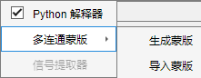
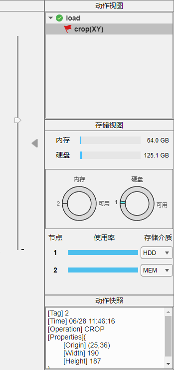
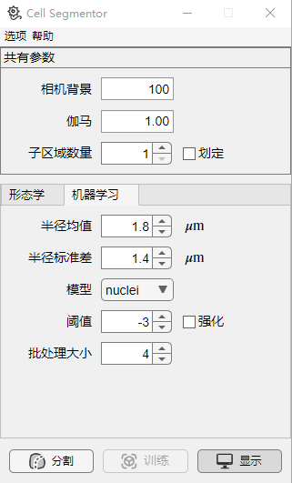
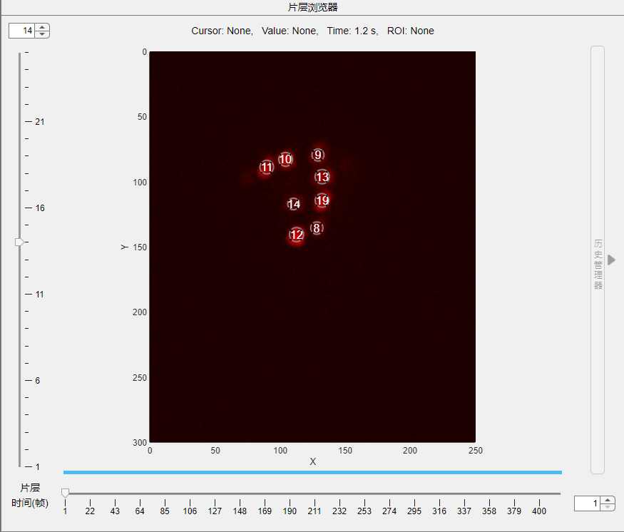
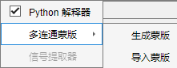
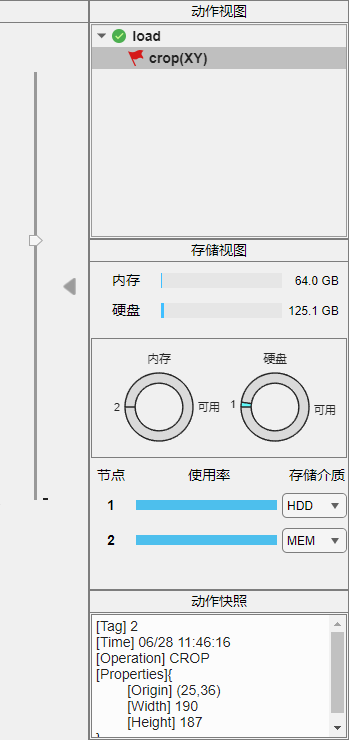
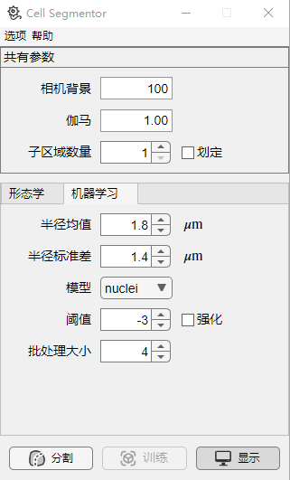
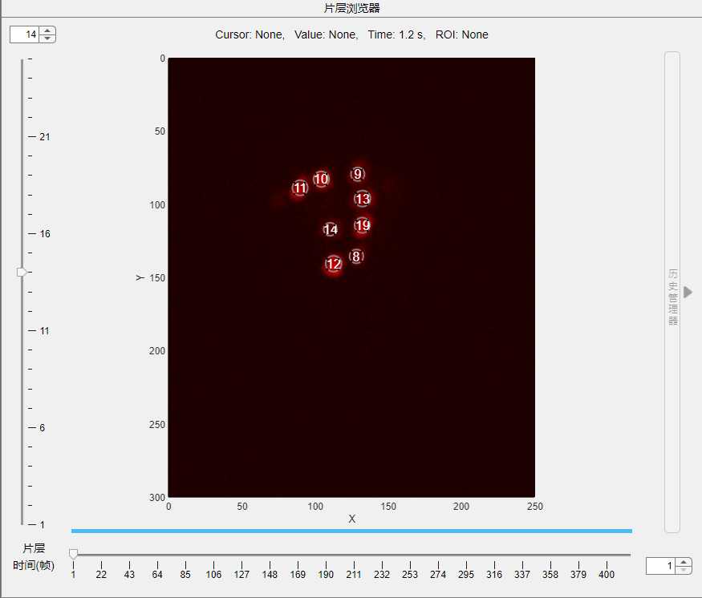

1.4.2 细胞分割器
 细胞分割器可用于生成具有多个连通域的蒙版，结合信号提取器可用于提取感兴趣区域荧光强度变化。   点击形态学或机器学习确定用于分割的方法(Version > 2.2.0)。勾选共有参数中的划定， 您可以在主屏幕上确定分割区域，数量由子区域数量>指定，这通常会加速计算。 分割完成后，屏幕上会出现对应区域，您可以通过右键菜单中的细胞管理手动调整连通域。 此时信号提取器处于可用，如下图示例： 

细胞分割器可用于生成具有多个连通域的蒙版，结合信号提取器可用于提取感兴趣区域荧光强度变化。


点击形态学或机器学习确定用于分割的方法(Version > 2.2.0)。勾选共有参数中的划定， 您可以在主屏幕上确定分割区域，数量由子区域数量>指定，这通常会加速计算。
分割完成后，屏幕上会出现对应区域，您可以通过右键菜单中的细胞管理手动调整连通域。 此时信号提取器处于可用，如下图示例：
